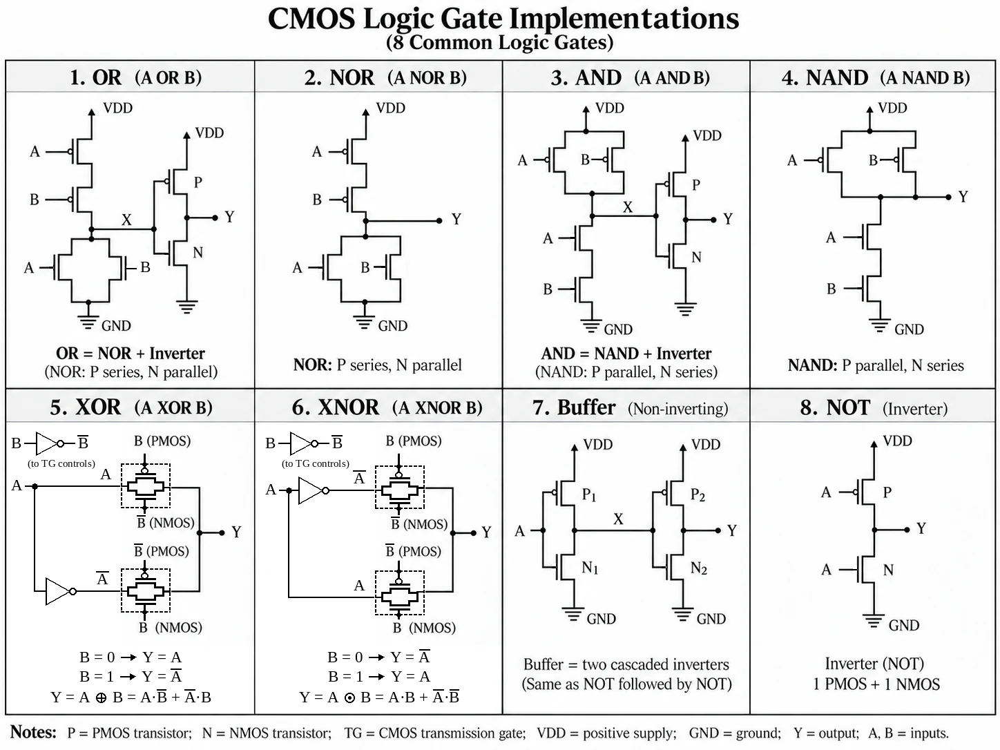
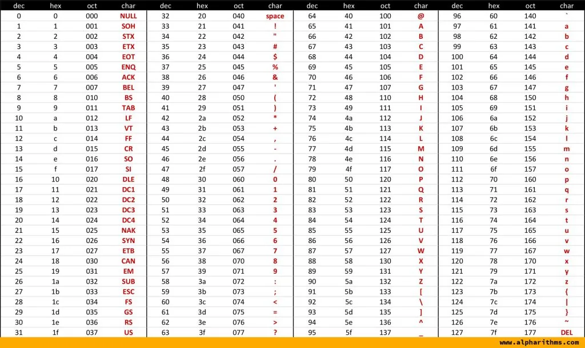
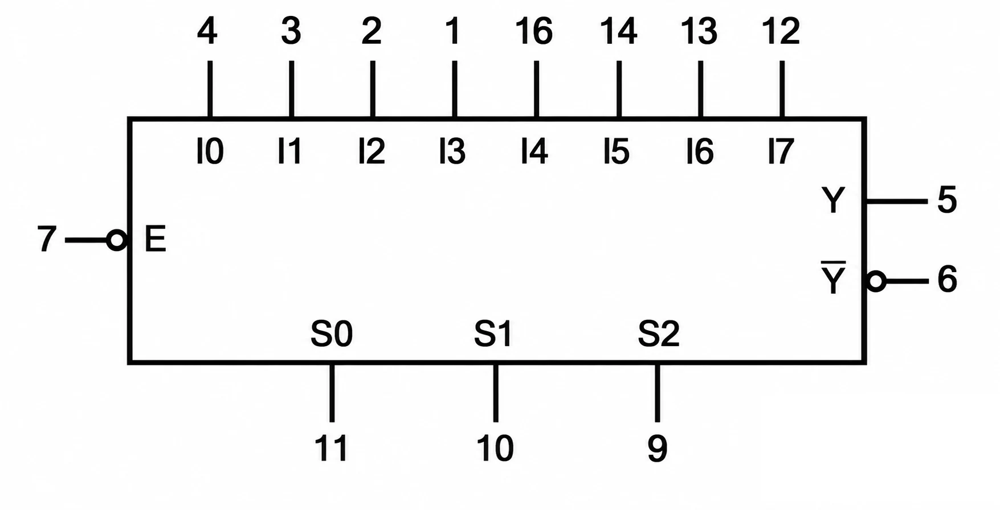

Boolean Algebra
Basic Operations and Equations
Computers use binary code to perform various operations. In Boolean algebra, each variable only has two possible values: 0 and 1.
Some basic operations:
- BUFFER ($A$):
| $A$ | $A$ |
|---|---|
| 1 | 1 |
| 0 | 0 |
- NOT ($\overline{A}$):
| $A$ | $\overline{A}$ |
|---|---|
| 1 | 0 |
| 0 | 1 |
- AND ($AB$):
| $A$ | $B$ | $AB$ |
|---|---|---|
| 0 | 0 | 0 |
| 0 | 1 | 0 |
| 1 | 1 | 1 |
| 1 | 0 | 0 |
- OR ($A+B$):
| $A$ | $B$ | $A+B$ |
|---|---|---|
| 0 | 0 | 0 |
| 0 | 1 | 1 |
| 1 | 1 | 1 |
| 1 | 0 | 1 |
- NAND ($\overline{AB}=\overline{A}+\overline{B}$):
| $A$ | $B$ | $\overline{AB}$ |
|---|---|---|
| 0 | 0 | 1 |
| 0 | 1 | 1 |
| 1 | 1 | 0 |
| 1 | 0 | 1 |
- NOR ($\overline{A+B}=\overline{A}\cdot \overline{B}$):
| $A$ | $B$ | $\overline{A+B}$ |
|---|---|---|
| 0 | 0 | 1 |
| 0 | 1 | 0 |
| 1 | 1 | 0 |
| 1 | 0 | 0 |
- XOR ($A\oplus B=A\overline{B}+\overline{A}B$):
| $A$ | $B$ | $A\oplus B$ |
|---|---|---|
| 0 | 0 | 0 |
| 0 | 1 | 1 |
| 1 | 1 | 0 |
| 1 | 0 | 1 |
- XNOR ($A\odot B=AB+\overline{A}\overline{B}$):
| $A$ | $B$ | $A\odot B$ |
|---|---|---|
| 0 | 0 | 1 |
| 0 | 1 | 0 |
| 1 | 1 | 1 |
| 1 | 0 | 0 |
Besides, $$A\oplus B=\overline{A\odot B}$$
The logic gate symbols are shown in the figure below:

We can use Analog Circuits to achieve them:

Basic equations in Boolean algebra:
| Name | OR | AND |
|---|---|---|
| Identity Law | $A+0=A$ | $A\cdot 1=A$ |
| Dominant Law | $A+1=1$ | $A\cdot 0=0$ |
| Idempotent Law | $A+A=A$ | $A\cdot A=A$ |
| Complement Law | $A+\overline{A}=1$ | $A\cdot\overline{A}=0$ |
| Involution Law | $\overline{\overline{A}}=A$ | |
| Commutative Law | $A+B=B+A$ | $AB=BA$ |
| Associative Law | $(A+B)+C=A+(B+C)$ | $(AB)C=A(BC)$ |
| Distributive Law | $A(B+C)=AB+AC$ | $A+BC=(A+B)(A+C)$ |
| Absorption Law | $A+AB=A$ | $A(A+B)=A$ |
| De Morgan's Laws | $\overline{AB}=\overline{A}+\overline{B}$ | $\overline{A+B}=\overline{A}\cdot\overline{B}$ |
Minterms and Maxterms
For $n$ Boolean variables, a minterm is a product term in which every variable appears exactly once, either complemented or uncomplemented; a maxterm is the dual sum term with the same property. With $n$ variables there are $2^n$ minterms $m_0,m_1,\dots,m_{2^n-1}$ and $2^n$ maxterms $M_0,M_1,\dots,M_{2^n-1}$. The index is read from the term itself: in a minterm a complemented variable contributes 0 and an uncomplemented variable 1; in a maxterm the convention is reversed, so that the two are complementary:
$$M_i=\overline{m_i}$$
For three variables $A,B,C$:
| $i$ | $ABC$ | Minterm $m_i$ | Maxterm $M_i$ |
|---|---|---|---|
| 0 | 000 | $\overline{A}\overline{B}\overline{C}$ | $A+B+C$ |
| 1 | 001 | $\overline{A}\overline{B}C$ | $A+B+\overline{C}$ |
| 2 | 010 | $\overline{A}B\overline{C}$ | $A+\overline{B}+C$ |
| 3 | 011 | $\overline{A}BC$ | $A+\overline{B}+\overline{C}$ |
| 4 | 100 | $A\overline{B}\overline{C}$ | $\overline{A}+B+C$ |
| 5 | 101 | $A\overline{B}C$ | $\overline{A}+B+\overline{C}$ |
| 6 | 110 | $AB\overline{C}$ | $\overline{A}+\overline{B}+C$ |
| 7 | 111 | $ABC$ | $\overline{A}+\overline{B}+\overline{C}$ |
Basic properties:
- Each minterm equals 1 for exactly one input combination; each maxterm equals 0 for exactly one.
- Distinct minterms are disjoint and together cover everything: $m_i\cdot m_j=0$ for $i\ne j$, and $\sum_{i=0}^{2^n-1}m_i=1$.
- Dually, $M_i+M_j=1$ for $i\ne j$, and $\prod_{i=0}^{2^n-1}M_i=0$.
Since $m_i$ is 1 exactly where the input combination equals $i$, any Boolean function is the sum of the minterms where it takes the value 1, and dually the product of the maxterms where it takes the value 0:
$$f=\sum_{i:\,f=1}m_i=\prod_{i:\,f=0}M_i$$
These are the canonical SOP and canonical POS forms; the two index sets are complementary.
Shannon Expansion Theorem
Every Boolean function $f(x_1,x_2,\dots,x_{i-1},x_i,x_{i+1},\dots,x_n)$ can be expanded about any variable $x_i$ as $$f=x_if(x_1,x_2,\dots,x_{i-1},1,x_{i+1},\dots,x_n)+\overline{x_i}f(x_1,x_2,\dots,x_{i-1},0,x_{i+1},\dots,x_n)$$
The Boolean variable $x_i$ has only two possible values, so we check both cases:
- If $x_i=1$: the right-hand side equals $1\cdot f(x_1,\dots,1,\dots,x_n)+0\cdot f(x_1,\dots,0,\dots,x_n)=f(x_1,\dots,1,\dots,x_n)$, which is exactly $f$ evaluated at $x_i=1$.
- If $x_i=0$: the right-hand side equals $0\cdot f(x_1,\dots,1,\dots,x_n)+1\cdot f(x_1,\dots,0,\dots,x_n)=f(x_1,\dots,0,\dots,x_n)$, which is exactly $f$ evaluated at $x_i=0$.
Since both sides agree for $x_i=0$ and $x_i=1$, and these are the only possible values of $x_i$, the identity holds for every input.
The two subfunctions are called cofactors, written $f_{x_i}=f(x_1,\dots,x_{i-1},1,x_{i+1},\dots,x_n)$ and $f_{\overline{x_i}}=f(x_1,\dots,x_{i-1},0,x_{i+1},\dots,x_n)$, so the theorem reads compactly as
$$f=x_if_{x_i}+\overline{x_i}f_{\overline{x_i}}$$
Repeated application about all $n$ variables decomposes any function into a sum of minterms, which is why a unique canonical SOP (sum of products) exists for every Boolean function.
Computer Operations and Coding
BCD Code
BCD (Binary-Coded Decimal) encodes each decimal digit (0–9) separately with a group of 4 bits, instead of converting the whole number to pure binary. For example,
$$159\ \rightarrow\ \underbrace{0001}_{1}\ \underbrace{0101}_{5}\ \underbrace{1001}_{9}\quad\text{(BCD)},\qquad 159=10011111_2\quad\text{(pure binary)}$$
BCD trades storage efficiency for convenience: no binary–decimal conversion circuitry is needed when displaying or inputting decimal numbers, so it is widely used in digital instruments, calculators, and financial systems where exact decimal fractions matter.
In a weighted BCD code, each of the 4 bits has a fixed weight, and the digit value is the sum of the weights where the bit is 1. Common BCD codes are as follows:
| Dec | 8421 Code | 2421 Code | 5421 Code | Excess-3 Code | Excess-3 Gray Code |
|---|---|---|---|---|---|
| 0 | 0000 | 0000 | 0000 | 0011 | 0010 |
| 1 | 0001 | 0001 | 0001 | 0100 | 0110 |
| 2 | 0010 | 0010 | 0010 | 0101 | 0111 |
| 3 | 0011 | 0011 | 0011 | 0110 | 0101 |
| 4 | 0100 | 0100 | 0100 | 0111 | 0100 |
| 5 | 0101 | 1011 | 1000 | 1000 | 1100 |
| 6 | 0110 | 1100 | 1001 | 1001 | 1101 |
| 7 | 0111 | 1101 | 1010 | 1010 | 1111 |
| 8 | 1000 | 1110 | 1011 | 1011 | 1110 |
| 9 | 1001 | 1111 | 1100 | 1100 | 1010 |
- 8421 code: the most common BCD code; its weights are the pure-binary place values $8,4,2,1$. The six patterns 1010–1111 are invalid (not used).
- 2421 and 5421 codes: weighted codes with weights $2,4,2,1$ and $5,4,2,1$. Since some digits admit more than one valid combination (e.g. in 5421, digit 5 can be 0101 or 1000), each code fixes one canonical form per digit; the table lists the standard ones.
- Excess-3 code: the 8421 code plus $3$ ($0011$). It is unweighted, and being offset from zero it cannot be mistaken for the all-zero pattern.
- Excess-3 Gray code: a cyclic Gray code derived from the Gray code introduced in the next section; adjacent codes, including 9 back to 0, differ in exactly one bit.
Gray Code
Gray code (reflected binary code) is an ordering of binary codewords in which two successive codewords differ in exactly one bit. In a reflected Gray-code sequence, the last and first codewords also differ in one bit, making the sequence cyclic. Compared with pure binary counting, where multiple bits may flip at once (e.g. $0111\rightarrow 1000$) and momentarily appear as spurious values, Gray code reduces transition-related ambiguity by changing only one bit at a time. It does not eliminate all sampling errors. A decimal-digit variant, the Excess-3 Gray code, is listed in BCD Code.
A 3-bit example:
| Decimal | Binary $b_2b_1b_0$ | Gray $g_2g_1g_0$ |
|---|---|---|
| 0 | 000 | 000 |
| 1 | 001 | 001 |
| 2 | 010 | 011 |
| 3 | 011 | 010 |
| 4 | 100 | 110 |
| 5 | 101 | 111 |
| 6 | 110 | 101 |
| 7 | 111 | 100 |
Construction (reflect-and-prefix): to build the $n$-bit Gray code, take the $(n-1)$-bit Gray code in order, then append the same list in reverse order (reflection); prefix the first half with 0 and the second half with 1.
Binary–Gray conversion, for an $n$-bit word with MSB index $n-1$:
$$\begin{cases}g_{n-1}=b_{n-1}\\ g_i=b_{i+1}\oplus b_i\end{cases},\qquad \begin{cases}b_{n-1}=g_{n-1}\\ b_i=b_{i+1}\oplus g_i\end{cases}\quad(i=0,1,\dots,n-2)$$
That is, Gray to binary: keep the MSB, and each remaining binary bit is the XOR of all Gray bits above it. Example: $0101_2\rightarrow 0111_{\text{Gray}}$.
Typical applications:
- Karnaugh maps: rows and columns are labeled in Gray code order so that physically adjacent cells differ in exactly one variable.
- Rotary encoders: a Gray-coded track reduces the chance of a large apparent jump when a sensor reads near a transition between positions.
- FIFO pointers crossing clock domains: Gray coding limits successive pointer changes to one bit. The receiving clock domain still needs synchronizers and suitable timing constraints.
Addition and Subtraction of Signed Integers
A signed integer takes the leading bit as a sign bit: 1 for negative, 0 for positive. This representation is called sign-magnitude (e.g. in 8-bit sign-magnitude, 0 0001101 = +13 and 1 0001101 = −13, where the first bit is the sign bit).
For a negative number, invert every value bit (sign bit excluded) of its sign-magnitude form; the result is called the ones' complement (e.g. the 8-bit ones' complement of −13 is 1 1110010). The ones' complement of a positive number equals its sign-magnitude form.
We further define the two's complement as the ones' complement plus 1 (e.g. the 8-bit two's complement of −13 is 1 1110011). The two's complement of a negative number $-N$ in $n$ bits equals $2^n-N$.
It is easy to build $a+b$ in hardware; computing $a-b$ is actually done as $a$ plus the two's complement of $b$, because
$$Z=X+(2^n-Y)=2^n+(X-Y)$$
and the term $2^n$ overflows beyond the $n$-bit range and is discarded automatically.
Overflow detection: two's-complement addition overflows only when two numbers of the same sign are added and the result has the opposite sign, i.e.
- positive + positive = negative (result sign bit 1)
- negative + negative = positive (result sign bit 0)
A positive plus a negative never overflows. Subtraction $a-b$ is converted to $a+(-b)$ and judged the same way.
IEEE Floating-Point Numbers
IEEE 754-2019 defines floating-point formats, arithmetic operations, rounding, and exception handling. This section describes its common binary interchange formats.
A 32-bit binary32 (single-precision) number is stored as the following bit string:
S EEEEEEEE MMMMMMMMMMMMMMMMMMMMMMM
where $S$ is the sign bit, $E$ is the 8-bit biased exponent, and $M$ is the 23-bit fraction; for normalized numbers the actual mantissa is the implicit leading $1$ followed by the fraction, $1.M$.
To represent both large and small magnitudes with an unsigned stored exponent, the binary32 exponent bias is $B=(01111111)_2$, i.e. $B=2^{e-1}-1=127$ where $e$ is the number of exponent bits. For normal numbers ($1\le E\le254$), the actual exponent is $E-B$. The exponent-field values $E=0$ and $E=255$ are reserved for zeros/subnormal numbers and infinities/NaNs, respectively.
NaN (Not a Number) is an important IEEE 754 concept, representing the result of an invalid operation (such as $0/0$, $\infty-\infty$, or the square root of a negative number) that cannot be assigned a real value. Overflow is a different condition: its default result can be $\pm\infty$ or the largest finite value, depending on the rounding direction. The fraction field of a NaN can also carry extra diagnostic information.
Three commonly discussed binary interchange formats are binary32 (single precision), binary64 (double precision), and binary128 (quadruple precision). IEEE 754 does not require programming languages to name these types float and double.
| Single | Double | Quadruple | |
|---|---|---|---|
| $S$ = sign bits | 1 | 1 | 1 |
| $E$ = exponent bits | 8 | 11 | 15 |
| $L$ = leading bit | 1 (implicit) | 1 (implicit) | 1 (implicit) |
| $F$ = fraction bits | 23 | 52 | 112 |
| total length | 32 | 64 | 128 |
In floating-point addition and subtraction, the exponents of the two operands must be aligned first: if they differ, the number with the smaller exponent is shifted right until the exponents match, then the mantissas are added or subtracted, and finally the result is normalized.
Floating-point multiplication adds the exponents and multiplies the mantissas; division subtracts the exponents and divides the mantissas.
Floating-point operations can produce more significant bits than the destination format can store, so the result is rounded to the available precision. Whether to increment the retained bits depends on the rounding mode and the discarded bits, as described below.
For finite operands under the same rounding mode, floating-point addition and multiplication are commutative, but they are not generally associative: $$\boxed{(a+b)+c\ne a+(b+c)\quad\text{and}\quad(ab)c\ne a(bc)\quad\text{in general}.}$$
Floating-point operations can also overflow when the rounded result is beyond the finite range. Underflow concerns results tiny relative to the smallest normal value; subnormal numbers allow many such results to remain nonzero.
Guard, round, and sticky bits: to reduce rounding error, floating-point units keep a few extra bits during mantissa shifts and intermediate computation. The rightmost three are the guard bit $G$, the round bit $R$, and the sticky bit $S$: $G$ and $R$ hold the first two shifted-out bits, while $S$ is the OR of all further shifted-out bits (it becomes 1 whenever any bit beyond $R$ is 1).
Example: suppose the larger mantissa is 1.0110 and the smaller mantissa 1.1001 must be shifted right by 3 bits to align exponents:
- Before shifting:
1.1001 - After shifting right 3 bits:
0.0011, and the shifted-out part is001.
In the hardware registers, the shifted-out part is not discarded immediately but lands in the $G$, $R$, $S$ positions: $G=0$ (the discarded bit nearest the retained fraction), $R=0$ (the next bit), and $S=1$ (the OR of the remaining discarded bits).
IEEE 754-2019 defines five rounding-direction attributes for binary arithmetic; the default is round-to-nearest with ties to even:
- If the discarded part $>0.5$ (i.e.
G=1and at least one of $R$, $S$ is 1), round up. - If the discarded part $<0.5$ (i.e.
G=0), round down (truncate). - If the discarded part is exactly $0.5$ (i.e.
G=1, $R=0$, $S=0$), look at the least significant bit (LSB): round up if $\mathrm{LSB}=1$, round down if $\mathrm{LSB}=0$.
ASCII Code
ASCII stands for American Standard Code for Information Interchange. It is a system that assigns a unique number to each letter, number, and symbol so computers can represent and exchange text.

Combinational Logic Circuit
Race and Hazard
In a real circuit, signals propagate through different paths with different delays. When the relative arrival times affect the output, this is a race. A circuit has a hazard if such delays can cause an unwanted temporary output change; the resulting pulse is a glitch. 
One way to remove a static-1 hazard in a sum-of-products circuit is to add a redundant consensus term that bridges adjacent 1-cells.

Depending on the circuit, an equivalent form can also avoid a hazardous path. The following example uses the identity $C\overline{C}=0$ to rewrite the expression; the implementation must still be checked for hazards.

Encoder
An encoder converts multiple binary codes into a smaller number of codes. For example, the following truth table shows the encoder:
 And a common encoder can be shown as:
And a common encoder can be shown as:
module encoder (
input wire I3,
input wire I2,
input wire I1,
input wire I0,
output wire Y1,
output wire Y0
);
assign Y1 = ~(I3 & I2);
assign Y0 = ~(I3 & I1);
endmoduleHowever, it has two disadvantages:
- Cannot distinguish between valid and invalid inputs.
- Cannot handle situations where multiple inputs are valid simultaneously.
The revised circuit is a priority encoder. Its inputs are active low, as in the truth table above. If multiple inputs are low, it encodes the highest-numbered active input ($I_3$ has the highest priority). The active-low output GS indicates whether any input is valid.
module priority_encoder (
input wire I3,
input wire I2,
input wire I1,
input wire I0,
output wire Y1,
output wire Y0,
output wire GS
);
assign GS = I3 & I2 & I1 & I0;
assign Y1 = ~I3 | (I3 & ~I2);
assign Y0 = ~I3 | (I3 & I2 & ~I1);
endmoduleHere, GS=0 means at least one input is active. The same circuit can be described with casez; ? matches either bit value:
module priority_encoder (
input wire [3:0] I,
output reg [1:0] Y,
output reg GS
);
always @(*) begin
Y = 2'b00;
GS = 1'b0;
casez (I)
4'b0???: Y = 2'b11; // I3 has highest priority
4'b10??: Y = 2'b10;
4'b110?: Y = 2'b01;
4'b1110: Y = 2'b00;
default: GS = 1'b1; // no active input
endcase
end
endmoduleDecoder
The decoder is the reverse process of the encoder. Like the following verilog code:
module decoder (
input wire E,
input wire A0,
input wire A1,
output wire Y0,
output wire Y1,
output wire Y2,
output wire Y3
);
assign Y0 = E & ~ A0 & ~ A1;
assign Y1 = E & A0 & ~ A1;
assign Y2 = E & ~ A0 & A1;
assign Y3 = E & A0 & A1;
endmoduleIt can also be described as:
module decoder (
input wire E,
input wire [1:0] A,
output reg [3:0] Y
);
always @(*) begin
Y = 4'b0000;
if (E)
Y[A] = 1'b1;
end
endmoduleIn computer, CPU output the binary address. The addresses are first mapped to different memory areas, such as ROM, RAM, etc. Then in the memory area, it will continue internal addressing.
A classic MSI implementation is the 74HC138, a 3-to-8 line decoder of the 74HC (high-speed CMOS) family. It provides three address inputs $A_2A_1A_0$, eight active-low outputs $\overline{Y_0}$–$\overline{Y_7}$, and three enable inputs: $G_1$ active high, $\overline{G_{2A}}$ and $\overline{G_{2B}}$ active low. The decoder is enabled only when $G_1=1$ and $\overline{G_{2A}}=\overline{G_{2B}}=0$; then exactly one output, selected by the address, goes low:
| $G_1$ | $\overline{G_{2A}}$, $\overline{G_{2B}}$ | $A_2A_1A_0$ | Outputs |
|---|---|---|---|
| 0 | X | XXX | all 1 |
| X | any 1 | XXX | all 1 |
| 1 | both 0 | $i$ | $\overline{Y_i}=0$ |

Writing $E$ for the overall enable condition and $m_i$ for minterm $i$ of $A_2A_1A_0$, each output is an active-low minterm:
$$\overline{Y_i}=\overline{E\cdot m_i},\qquad i=0,1,\dots,7$$
This structure makes the chip useful beyond plain decoding:
- Address decoding: high-order CPU address lines drive $A_2A_1A_0$, and each $\overline{Y_i}$ becomes the chip-select signal of one memory or I/O device, realizing the address mapping described above.
- Logic synthesis: since every output is an active-low minterm, any 3-variable function $f=\sum m_i$ is obtained by feeding the corresponding outputs into one NAND gate: $f=\overline{\overline{Y_{i_1}}\cdot\overline{Y_{i_2}}\cdot\ldots}$.
- Expansion: two chips form a 4-to-16 decoder by driving $G_1$ of the low half and $\overline{G_{2A}}$ of the high half with the fourth address bit.
Multiplexer (MUX)
The multiplexer is used to select one input from multiple channels and route it to the output channel. For a 2-to-1 data selector, we can use function $Y=\overline{S}D_0+SD_1$ to describe. And the symbol is as follow: 
module mux2to1 (
input wire D0,
input wire D1,
input wire S,
output wire Y
);
assign Y = S ? D1 : D0;
endmoduleGenerally, $k$ select bits choose one of $2^k$ data inputs. The same Verilog pattern can be parameterized:
module mux_pow2_to_1 #(
parameter integer SELECT_BITS = 2
) (
input wire [(1 << SELECT_BITS)-1:0] D,
input wire [SELECT_BITS-1:0] S,
output wire Y
);
assign Y = D[S];
endmoduleFor SELECT_BITS = 2, this is a 4-to-1 MUX; for SELECT_BITS = 3, it is an 8-to-1 MUX.
The classic MSI counterpart is the 74HC151, an 8-to-1 data selector in the same 74HC family as the 74HC138 in Decoder. It has three select inputs $S_2S_1S_0$, eight data inputs $I_0$–$I_7$, an active-low enable $\overline{E}$, and a pair of complementary outputs $Y$ and $\overline{Y}$:
| $\overline{E}$ | $S_2S_1S_0$ | $Y$ | $\overline{Y}$ |
|---|---|---|---|
| 1 | XXX | 0 | 1 |
| 0 | $i$ | $I_i$ | $\overline{I_i}$ |

When enabled ($\overline{E}=0$), with $m_i$ the minterms of the select inputs,
$$Y=\sum_{i=0}^{7}m_iI_i$$
Demultiplexer (DEMUX)
A demultiplexer routes one data input to one of several outputs. In a 1-to-4 DEMUX, the two select bits $S_1S_0$ choose which output receives $D$; all other outputs are 0.
| $S_1S_0$ | $Y_0$ | $Y_1$ | $Y_2$ | $Y_3$ |
|---|---|---|---|---|
| 00 | $D$ | 0 | 0 | 0 |
| 01 | 0 | $D$ | 0 | 0 |
| 10 | 0 | 0 | $D$ | 0 |
| 11 | 0 | 0 | 0 | $D$ |
The output equations are
$$\begin{aligned} Y_0&=D\overline{S_1}\overline{S_0}, &Y_1&=D\overline{S_1}S_0,\\ Y_2&=DS_1\overline{S_0}, &Y_3&=DS_1S_0. \end{aligned}$$
module demux1to4 (
input wire D,
input wire [1:0] S,
output wire [3:0] Y
);
assign Y[0] = D & ~S[1] & ~S[0];
assign Y[1] = D & ~S[1] & S[0];
assign Y[2] = D & S[1] & ~S[0];
assign Y[3] = D & S[1] & S[0];
endmoduleWith $k$ select bits, the same idea extends to a 1-to-$2^k$ DEMUX: $Y[S]=D$, and every other output is 0.
module demux_1_to_pow2 #(
parameter integer SELECT_BITS = 2
) (
input wire D,
input wire [SELECT_BITS-1:0] S,
output wire [(1 << SELECT_BITS)-1:0] Y
);
localparam integer OUTPUTS = 1 << SELECT_BITS;
assign Y = {{(OUTPUTS-1){1'b0}}, D} << S;
endmoduleA decoder with an enable input doubles as a DEMUX: feeding the data $D$ into the $\overline{G_{2A}}$ pin of a 74HC138 (Decoder) routes $D$ to the addressed output $\overline{Y_i}$, while all other outputs stay at 1.
Comparator
A magnitude comparator compares two binary numbers $A$ and $B$ and outputs whether $A>B$, $A=B$, or $A<B$.
We can easily build the 1-bit comparator:
module comparator_1bit (
input wire A,
input wire B,
output wire F1, // A < B
output wire F2, // A = B
output wire F3 // A > B
);
assign F1 = ~A & B;
assign F2 = A ~^ B;
assign F3 = A & ~B;
endmoduleAnd we can build the 2-bit comparator as follows:
module comparator_2bit (
input wire [1:0]A,
input wire [1:0]B,
output wire F1, // A < B
output wire F2, // A = B
output wire F3 // A > B
);
wire F01, F02, F03, F11, F12, F13;
comparator_1bit c0(
.A(A[0]),
.B(B[0]),
.F1(F01),
.F2(F02),
.F3(F03)
);
comparator_1bit c1(
.A(A[1]),
.B(B[1]),
.F1(F11),
.F2(F12),
.F3(F13)
);
assign F1 = (F01 & F12)| F11;
assign F2 = F02 & F12;
assign F3 = (F03 & F12)| F13;
endmoduleSimilarly, we can make a 4-bit comparator; the integrated 4-bit magnitude comparator chip is the 74x85:
 The inputs $I_{A>B},I_{A=B},I_{A<B}$ are for facilitating the cascading of several comparators. When $A$ and $B$ differ in the 4 bits, the outputs depend only on $A$ and $B$, and the cascade inputs are ignored. Only when all 4 bits are equal do the outputs follow the cascade inputs: $F_{A>B}=I_{A>B},F_{A=B}=I_{A=B},F_{A<B}=I_{A<B}$. For standalone use, tie $I_{A=B}=1$ and $I_{A>B}=I_{A<B}=0$.
The inputs $I_{A>B},I_{A=B},I_{A<B}$ are for facilitating the cascading of several comparators. When $A$ and $B$ differ in the 4 bits, the outputs depend only on $A$ and $B$, and the cascade inputs are ignored. Only when all 4 bits are equal do the outputs follow the cascade inputs: $F_{A>B}=I_{A>B},F_{A=B}=I_{A=B},F_{A<B}=I_{A<B}$. For standalone use, tie $I_{A=B}=1$ and $I_{A>B}=I_{A<B}=0$.
We can use 74x85 to do the comparison for larger numbers. 
Although the serial (cascade) expansion approach is structurally intuitive, the result must be propagated stage by stage; the more stages involved, the greater the latency, resulting in relatively slow speeds. A better approach is to use parallel expansion.

Adder
Half-adder: An addition circuit that considers only the two addends themselves, without accounting for a carry-in from a lower-order bit.
- Inputs are two 1-bit binary addends $A$ and $B$.
- Outputs are a 1-bit sum $S$, and a 1-bit carry-out $C_O$.
module half_adder (
input wire A,
input wire B,
output wire S,
output wire C_O
);
assign S = A ^ B;
assign C_O = A & B;
endmoduleLogical symbol: 
Full Adder: A circuit that performs the addition of two binary numbers and a carry-in signal from a lower-order bit.
- Inputs: Two 1-bit binary addends $A$ and $B$ and a 1-bit carry-in $C_I$.
- Outputs: A 1-bit sum $S$ and a 1-bit carry-out to the next higher-order bit $C_O$.
module full_adder (
input wire A,
input wire B,
input wire C_I,
output wire S,
output wire C_O
);
wire s, C_O1, C_O2;
half_adder a0(
.A(A),
.B(B),
.S(s),
.C_O(C_O1)
);
half_adder a1(
.A(s),
.B(C_I),
.S(S),
.C_O(C_O2)
);
assign C_O = C_O1 | C_O2;
endmoduleLogical symbol: 
Cascading full adders gives a ripple-carry adder, but the carry must propagate bit by bit, so it costs more time for larger numbers. A classic way to improve the performance is the Carry Look-Ahead Adder (CLA).
Firstly, calculate:$$P_i=A_i\oplus B_i,\qquad G_i=A_iB_i$$ Then the carry and sum are $$C_{i+1}=G_i+P_iC_i,\qquad S_i=P_i\oplus C_i$$ Expanding the carries recursively expresses every $C_{i+1}$ directly in terms of $P$, $G$, and $C_0$, which removes the ripple.
module cla_4bit (
input wire [3:0]A,
input wire [3:0]B,
input wire C_I,
output wire [3:0]S,
output wire C_O
);
wire [3:0] P, G;
wire [4:0] C;
assign P = A ^ B;
assign G = A & B;
assign C[0] = C_I;
assign C[1] = G[0] | (P[0] & C[0]);
assign C[2] = G[1] | (P[1] & G[0]) | (P[1] & P[0] & C[0]);
assign C[3] = G[2] | (P[2] & G[1]) | (P[2] & P[1] & G[0]) | (P[2] & P[1] & P[0] & C[0]);
assign C[4] = G[3] | (P[3] & G[2]) | (P[3] & P[2] & G[1]) | (P[3] & P[2] & P[1] & G[0]) | (P[3] & P[2] & P[1] & P[0] & C[0]);
assign S = P ^ C[3:0];
assign C_O = C[4];
endmoduleThe integrated 4-bit CLA chip is called 74x283: 
We can also use 74x283 to do subtraction. Since $X-Y=X+\overline{Y}+1$, the first adder computes $X-Y$; a carry-out of 1 means no borrow, so $V=\overline{C_1}$ is the borrow (sign) flag ($V=1$ means $X<Y$), not an overflow flag, and the second adder takes the two's complement of the result only when $V=1$, giving the magnitude $|X-Y|$.
module subtractor_4bit (
input wire [3:0]X,
input wire [3:0]Y,
output wire [3:0]S,
output wire V // borrow: V = 1 means X < Y
);
wire [3:0] S1;
wire C1;
cla_4bit a0(
.A(X),
.B(~Y),
.C_I(1'b1),
.S(S1),
.C_O(C1)
);
assign V = ~C1;
cla_4bit a1(
.A(4'b0000),
.B(S1 ^ {4{V}}),
.C_I(V),
.S(S),
.C_O()
);
endmodule
Comments
Questions, corrections, and reading notes are welcome here.
Comments load on the published website.